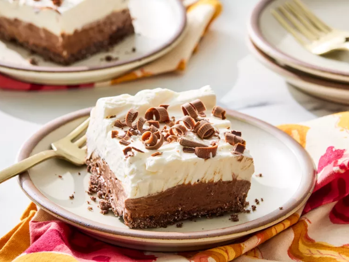

French Silk Pie Bars
Home

DESCRIPTION
These French silk pie bars are sooo good. They consist of a chocolate crust, followed
by a chocolate mousse layer topped with whipped cream with just a little tang
from cream cheese. You can't go wrong with these!
INCREDIENTS
- 1/3 cup butter, melted
- 1/4 cup white sugar
- 7 ounces bittersweet chocolate
- 4 large eggs, at room temperature
- 3/4 cup white sugar
STEPS
- Preheat the oven to 375 degrees F (190 degrees C). Lightly grease a 9x9-inch baking pan
- For crust, combine melted butter and 1/4 cup white sugar in a bowl. Add crushed crackers;
toss to mix well. Press mixture into the bottom of the prepared pan.
- Bake in the preheated oven until crust is set, about 8 minutes. Cool completely on a wire rack./li>
- Prepare filling. Place chocolate in a bowl set over a large saucepan of simmering water (bowl should not touch water)
. Cook, stirring frequently, until chocolate is melted. Set aside to cool.